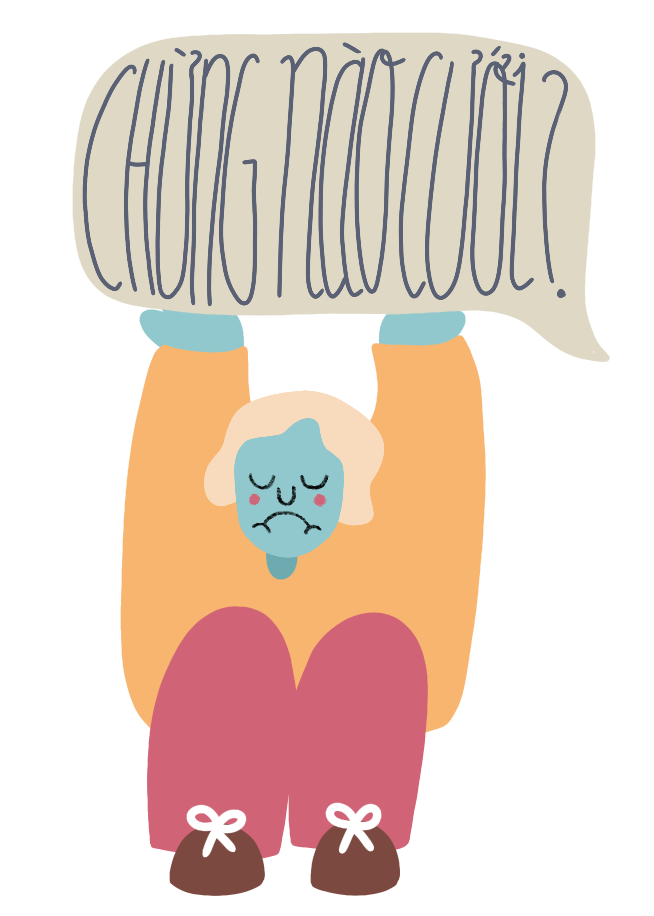

Family
Chapter 02
Overcoming rigid family attitudes remains one of the greatest obstacles facing Vietnam’s LGBTQ community. Most Vietnamese families still believe that relationships and marriage should only be between a man and woman. Therefore, chapter 02 will place an emphasis on family and traditional values. Besides family, chapter 02 will talk about coming out, marriage, laws, and the concept of “chosen family”.
Table of Contents


Click to navigate
Family
"Sometimes it isn’t because parents cannot accept their children's homosexuality, but it's because they cannot accept their failure to meet society’s expectation as parents.”
— Lương Thế Huy
Director of LGBT Rights Program(iSEE)
Parents
Bố Mẹ

For East Asian families, traditional values and family members are always the top priority. Unfortunately, most queer folks in Vietnam have to choose between the love of their family or being true to themselves.
The moment their children was born, all parents want what’s best for their kids. However, their love can also be a double-edged sword. They want their children to have the best education, marry someone wonderful, and have a big family with many grandchildren. Because they have all of these plans in their head since the day their children were born, when that child comes out as queer, parents often fall into denial knowing this dream will not become a reality. Sometimes, parents are not disappointed because their children are queer, but they are disappointed because they do not want to believe that they have failed their roles as parents when their children do not fall into a certain mold of society.
Parents do not want their children to be queer because they know that both them and their children will become victims of discrimination. So in order to keep face, some parents will find ways to change their children’s sexual orientations, simply because they truly believe that this is how they can help their children. Physical and mental abuse, restriction in relationships, even conversion therapy are some common methods they try to “cure” their children. Although they believe that they are doing what best for their children, they do not realized that these actions are counterproductive and damaging to both sides.
But remember, at the of the day, parents will always love their children.
LGBTQ folks should not feel sad or discouraged if their parents yell at them, because this would mean you have accepted to surrender your parents to social prejudice. Especially in Vietnam, you should understand that the previous generation grew up without access to information or representation of the LGBTQ community. The first encounter your parents had with queer people was from the old media’s representation where queer folks were inaccurately captured in negative light(for example, in 2002, homosexuality was listed as “social evil” alongside with drugs and prostitution). Therefore, you should use your words to inform and generate understanding about you and the queer community to your parents.
Chosen Family
Gia Đình Tự Chọn

During big holidays like Tết or Christmas, everyone wants to spend these valuable time with their families. Unfortunately, not everyone can. From being shunned by their family to getting kicked out of the house, these are the reality that some queer Vietnamese folks have to face. That said, in the face of rejection by their biological family, queer people have chose to build their own chosen families. Chosen family is a group of close people you considered family, not necessarily be biologically related. Although the term "chosen family" was coined not too long ago, this concept has been a foundation for many queer people to find the support, love, and affirmation they lack from their biological families.
Even if your biological family accepts and supports your queerness, they still do not fully understand the true experience of a queer person. Therefore, having a group of people who understand your experience is very affirming. People with the same experience give you the confirmation that you are not the only one to experience the feelings, confusion, or sorrow you have faced as a queer person living in a heteropatriarchy society.
The concept of chosen family may be most important for queer street children. Save the Children Vietnam's research shows that LGBTQ children often leave home due to their family's neglect, or psychological issues caused by lack of support and affirmation by biological family. Therefore, a chosen family is necessary for them to overcome these difficulties. In Vietnam, there are many cases where families of transgender folks force them out of the house once they found out about their gender identity. Transgender children had to grow up really fast and find ways to support themselves on the street. Because it is very difficult to get a stable job both as a child and a transgender person, some children form their own chosen families and join performance groups to earn a living (in Vietnam, due to the difficulty of finding jobs because of their gender identity, transgender people often form entertainment groups to perform at funerals and weddings to earn money).

"In the picture, Bóng Mén, 14 years old, is styling hair for sisters Trúc Lam — Trúc Linh (also transgenders) before they perform at a funeral in Đầm Sen. She enjoys doing hair for herself and other people. She has a gift in hairstyling and makeup, and she asked if she could join the transgender performing group on their tour. Sometimes, she even gets paid.” - Cát Thy

Coming Out

Strategy
Chiến Lược

Deciding to come out is a very brave decision, and it can be one of the biggest milestones for queer people. There is no right or wrong way to do it, and everyone has their own unique process. Especially with your family, this process can be a roller coaster of emotions. While this might not be applicable to every situation, here are some tips to help you to come out to your family and close friends.
Preparation
Before you come out, be mentally prepared to deal with different situations. To scope out what your peers’ reactions might be, engage in conversation and bring up these topics:
- Ask them how they feel about queer celebrities
- Ask them how they feel about marriage equality
- Listen to the way they talk about queer topics. Do they use stereotypes? Do they use derogatory terms?
- Mention that your have a queer friend who is going through a certain situation and needs advice, see what they have to say.
After having an idea of what their view might be on queer topics, ask yourself these questions:
- Why do I want to come out to this person right now?
- What are some good reactions I want to hear?
- What are some bad reactions I might get?
- What can I do to help deal with really extreme reactions?
Sympathy
When you come out, this may be the first time your parents have ever discussed topics about sexual orientations and identity. Growing up in a developing country in a decade without access to the Internet and information about the queer knowledge, the first encounter your parents had with queer people was probably from the old media’s representation where queer folks were inaccurately captured in negative light (for example, in 2002, homosexuality was listed as “social evil” alongside with drugs and prostitution). In moments of uncertainty, your parents might protest and scold, as this is a natural reaction to when they think their child is doing something bad. You should not feel sad or discouraged if your parents yell at you, because this would mean you have accepted to surrender your parents to social prejudice. Instead, use your words to inform and generate understanding about you and the queer community.
Emotions
When coming out to your peers, use emotions so they can sympathize with your experiences. Tell them about the loneliness you have to go through, the feelings you have to hide, the questions you cannot ask. Simplify the concept of queerness so it is easier for your parents to process the information. For example, some people are born left-handed, some people are born queer. This is not a choice or an environmental impact. Blaming gay people for their sexual orientation is like blaming left-handed people for not being right-handed like the majority of people.
Information
In addition to emotions, use information and facts to convince your parents. You can point out that Vietnam is starting to be more open to gay and transgender people. For example, in 2014, the government officially abolished the ban on same-sex marriage that they originally issued in 2000. Or in 2015, Vietnam passed a landmark law that allows people to legally change their gender. These are the evidence to prove that from the government to the public, everyone is starting to support LGBTQ rights for equality.

Patience
This is a long journey, and it won’t be over in a day or two. If your parents do not accept your sexual orientation or identity right away, give them some time to process. Day by day, denial will become acceptance. And if you’re lucky, that acceptance will become support. While waiting for the acceptance from your parents, perform self care acts to stay healthy and positive.
Dissonance (2019). Animator Matthieu Garcia Marin
captures the longing and anxiety of coming out.
Marriage

Pressure
Áp Lực

TL;DR: It is not your responsibility to marry someone to make your parents happy!
In Vietnam, marriages is believed to serve the purpose of maintaining the family name, face, and existence. Society heavily stresses that members must contribute to social development. “Do you have a girlfriend yet? When are you getting married? When are you going to have kids?” are inevitable questions that will be asked during big family gathering. Consequently, the pressure of marriage is one of the biggest obstacles for queer folks in Vietnam.
Many queer Vietnamese folks believe that marrying someone to satisfy their parents’ wishes will be enough. Lương Thế Huy, the director of LGBTQ rights (iSEE), said: “Parents who actually respect their children’s personal lives will be satisfied with their children no matter what. As for those who were never satisfied to begin with, the temporary satisfaction of marriage will be the catalyst for other requests”. After marrying someone, your parents will ask for grandchildren. After having your own children, the joy of being a parent might be real, but that joy will not be enough to disregard your true feelings. Living an artificial life to make your family happy will affect not just you, but the person you married and your children as well.
"If you are marrying someone to avoid social prejudice, that relationship won’t last long because it is not based on true feelings."
If your family forces you to marry someone who is heterosexual or someone you do not love, you need to make it clear that you are an adult and can make your own decisions. You can argue that, legally, an arranged or forced marriage is against the law and will be asked to terminate the relationship (Law on Marriage and Family, Article 05). Since this is a big decision that will affect the rest of your life, you should ask your family to respect whatever you choose to do.
Laws
Luật Pháp

Marriage
The law in Vietnam does not recognize marriage between people of the same sex. Same-sex couples are not protected by the law— therefore, if a couple lives together, they will only be recognized as two individuals living in the same household. Assets can be considered shared property if both of their names are on the paper, and in the case of separation, they will be treated under Civil Laws and not Marriage and Family.
Ceremonies such as weddings between two queer people do not violate the law. The government does not considered these ceremonies as legally binding as marriage registration. Thus, a gay couple can have a wedding ceremony without being intervened by the government. In the scenario where local government does intervene with these ceremonies, the couple can explain that this is not a "marriage ceremony" but rather a “party".
Law on Marriage and Family 2014. Article 08. Conditions for getting married:
- A man and a woman wishing to marry each other must satisfy the following conditions:
a) The man is full 20 years or older, the woman is full 18 years or older;
b) The marriage is voluntarily decided by the man and woman;
c) The man and woman do not lose the civil act capacity;
d) VThe marriage does not fall into one of the cases prescribed at Points a, b, c and d, Clause 2, Article 5 of this Law. - The State shall not recognize marriage between persons of the same sex.
Children
In Vietnam, there are several ways that gay couples can have children legally. Lesbians or female-to-male transgender people can ask for sperm for artificial insemination. Gay couples also have the right to adopt children as a single person. Because Vietnam’s laws have not yet recognized gay couples, only one person in that relationship will be recognized as the adoptive father or mother of the child.
Currently, Vietnam only allows spouses who are unable to give birth to have a surrogate. The surrogate is required to be related to one of the people in the couple. Gay couples cannot ask for a surrogacy as a single person, since surrogacy is only allowed for infertile heterosexual married couples.
Learn more about laws on marriage and family for queer couples here.
Stories

"We cannot live forever. If something were to happen to him, who would take care of him? Only when letting him live the way he wants can we rest in peace."
— Mrs. T.
Mrs. T.’s husband was from the province of Thai Binh and placed great importance on continuing the family lineage. Fortunately, her first-born child, D., was a baby boy who quickly became the joy of the whole family. Happiness grew ever more in that small family. “Thinking of him, I broke into tears of happiness,” Mrs. T. said. During his second year in college, her son admitted that he was gay. Mrs. T. and her husband started to discriminate against him. “The more I had loved him before, the more I ignored him, hated him, and even was disgusted by him then. Society thought of homosexuality as an illness, and so did we, thinking of them as insects,” she remembered. Mrs. T. did not care for or love her son anymore. “When he graduated, we were invited but never went.”
For many years, Mrs. T. and her husband tried to change his sexual orientation. They took him to one hospital after another, had his blood tested and forced hormone treatment upon him. “Since rumours had it that a female spirit may have invaded my son, we took him to a shaman in the Mekong Delta. They prodded him in his private parts while asking who he was, but he kept answering: ‘I am D.’. They tied him up and prodded him more, and he kept screaming: ‘It hurts, hurts, hurts; I am gay, and I like boys.’ I and my husband looked and each other, knowing that if we had continued, our son would have died,” Mrs. T. confessed.
"It hurts, hurts, hurts; I am gay, and I like boys!"
Despite his treatment, D. always obeyed his parents. Now thinking back, Mrs. T. knew that her son was struggling a lot. During high school, he was hospitalized because of psychological instability and stress (they did not known his sexual orientation back then). The second time he was hospitalized because of work-related stress. He had multiple jobs while going to graduate school because his parents said that they would never support him after he had come out.
“I was silly to the point that I asked the doctor to keep him in the female pavilion instead of the male one. One night when we were next to him, he suddenly stood up and counted from one to six. ‘I count to 6 and H. (then his boyfriend) will appear,’ he said. ‘We promised each other.’ Then he collapsed to the floor and repeated the same actions.” After many similar instances, they realized their son was experiencing a hundred times more pain than they were. They decided to stop and take care of him to make up for those times.
“He is now 30 years old and working in the Philippines. His mind is stable but his illness returns in times of stress. We cannot live forever. If something were to happen to him, who would take care of him? Only when letting him live the way he wants can we rest in peace.” Mrs. T. said.

ISEE interviewed 30 transgender people in Hà Nội và Hồ Chí Minh city